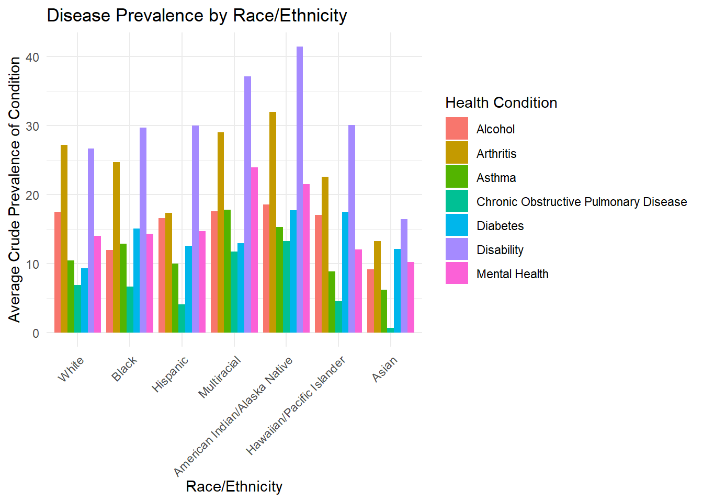
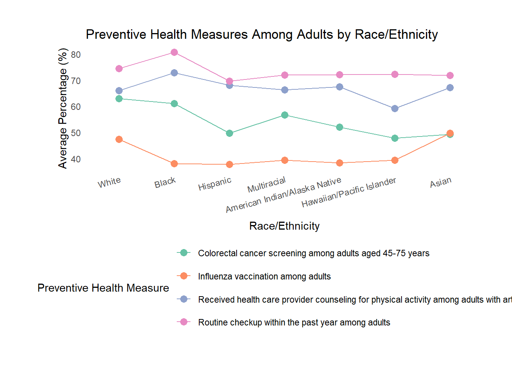
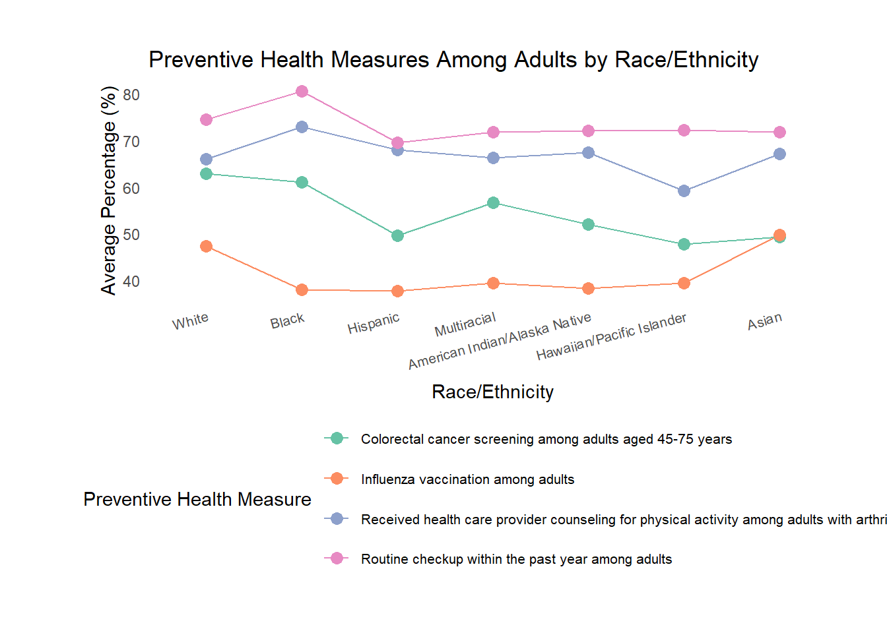
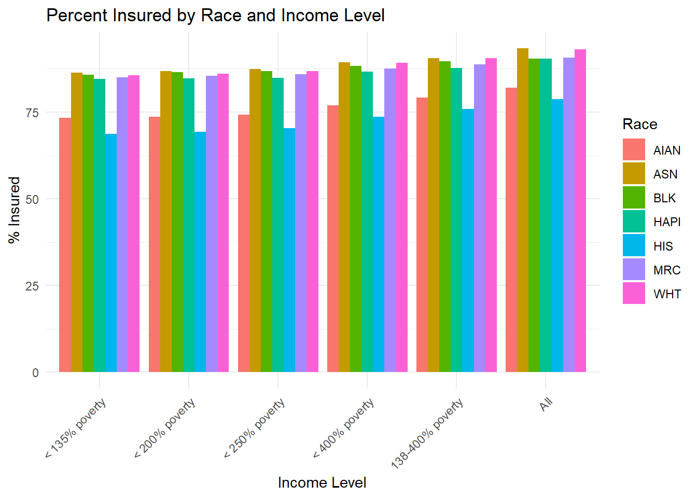
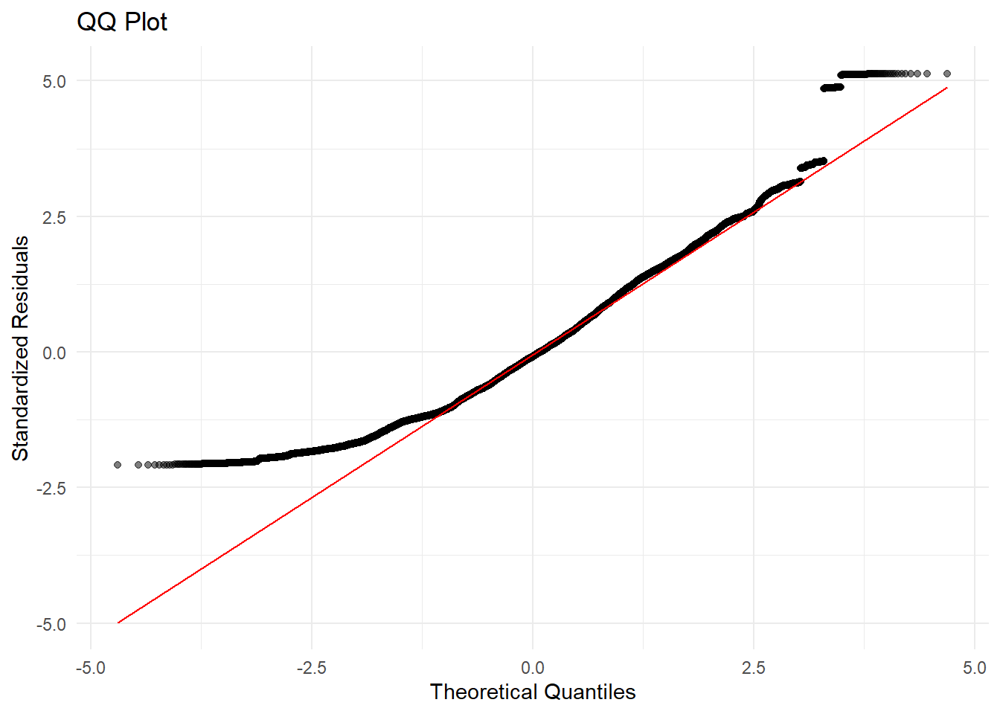

Analysis
Here we provide a detailed analysis using more sophisticated statistics techniques.
Motivation and Research Questions
Motivation
The main purpose of this study is to investigate the disparities in chronic disease prevalence across different racial and ethnic groups in the United States. This project also seeks to examine the relationship between preventive health measures—such as vaccination rates and cancer screenings—and chronic disease outcomes, with a focus on potential gaps in access and utilization. By incorporating data on income levels and insurance coverage, the analysis aims to uncover how socioeconomic factors contribute to these health disparities. Understanding these relationships can help identify the most influential factors affecting chronic disease prevalence and support efforts to improve health equity and outcomes nationwide.
Research Questions
How does chronic disease prevalence vary among different racial and ethnic groups across U.S. states?
What are the patterns of preventive health measure usage (e.g., screenings, vaccinations) among racial and ethnic groups, and how do these relate to disease outcomes?
How do uninsurance rates vary across racial and income groups?
Do income level and uninsurance rates correlate with chronic disease prevalence and preventive health measure usage?
Statistical Analysis
To begin addressing our first research question, we created a bar plot visualizing the average crude prevalence of several chronic health conditions by race and ethnicity. We decided to investigate health disparities across racial and ethnic groups by examining the prevalence of seven specific health outcomes: Alcohol use, Arthritis, Asthma, COPD (Chronic Obstructive Pulmonary Disease), Diabetes, Disability, and Mental Health issues. Each condition was averaged within each racial or ethnic category to allow for clearer comparisons across groups.
The bar chart shown above highlights distinct disparities in chronic disease prevalence. Notably, Multiracial and American Indian/Alaska Native populations consistently exhibit higher rates across multiple conditions, with especially elevated levels for Disability and Arthritis concerns. In contrast, Asian populations generally report lower average prevalence across all conditions analyzed. These patterns suggest that chronic disease burdens are not distributed equally and may reflect underlying structural inequities in healthcare access, environmental exposures, or social determinants of health.

We then decided to investigate if sex might be another critical dimension in understanding patterns of chronic disease. Biological differences, social roles, and health behaviors can all contribute to divergent health outcomes between men and women. To explore these potential disparities, we constructed a bar plot comparing average prevalence rates for the same set of chronic health conditions.
The resulting visualization reveals clear differences in chronic disease prevalence between males and females. Arthritis and Disability remain the most prevalent conditions overall, consistent with our earlier findings. However, the distribution of these conditions varies by sex. Alcohol use and Diabetes show higher average prevalence among men, whereas women experience higher rates of Arthritis, Asthma, COPD, Disability, and Mental Health issues. These findings highlight that sex-based health disparities are condition-specific and may reflect differing biological susceptibilities, healthcare-seeking behaviors, or exposures to risk factors.
These initial visualizations provides a compelling entry point into our analysis. It not only supports the presence of disparities in chronic disease prevalence, but also sets the stage for more detailed investigation into the socioeconomic and preventive care factors that may be contributing to these outcomes.

To explore our second research question—What are the patterns of preventive health measure usage among racial and ethnic groups, and how do these relate to disease outcomes?—we visualized the average percentage of adults engaging in four key preventive health behaviors, broken down by race and ethnicity. The graph above illustrates trends across the following categories:
Colorectal cancer screening among adults aged 45–75 years
Influenza vaccination among adults
Counseling for physical activity among adults with arthritis
Routine checkup within the past year among adults
This visualization highlights several important patterns. First, routine checkups maintain relatively high participation across all racial groups, with especially high rates among Black and Multiracial populations. However, when it comes to influenza vaccination, participation is markedly lower overall, with Black, Hispanic, and American Indian/Alaska Native populations showing the lowest averages—suggesting potential barriers to access or vaccine hesitancy in these communities.
The colorectal cancer screening and physical activity counseling among adults with arthritis show a more uneven distribution. The Asian and White populations tend to have higher rates of colorectal screening, while Multiracial and American Indian/Alaska Native groups show moderately lower usage. Counseling for physical activity shows notable dips for Hawaiian/Pacific Islander and Multiracial populations, which may point to inconsistencies in healthcare provider practices or systemic disparities in arthritis care.
Taken together, these disparities in preventive measure usage may help explain some of the patterns seen in chronic disease prevalence. For instance, groups with consistently lower rates of screenings and vaccinations—such as American Indian/Alaska Native and Multiracial populations—also showed higher rates of chronic conditions in our earlier analysis. This reinforces the idea that inequities in preventive care access may contribute to unequal health outcomes.

Building on the patterns observed in preventive care usage, we turned to a critical question: Why do certain racial and ethnic groups consistently experience lower access to preventive treatment? One major hypothesis centers on the role of socioeconomic factors, particularly insurance coverage, as a gateway to regular and proactive healthcare. To investigate this, we visualized insurance coverage rates across racial and ethnic groups, broken down by income level. The graph shows a clear, expected trend: as income level increases—from below 135% of the federal poverty line to the general population—insurance coverage increases across all racial and ethnic groups. This upward trend confirms the strong, positive correlation between income and access to insurance, reinforcing the idea that economic stability plays a critical role in healthcare access.
However, the graph also reveals persistent structural inequities. Even when controlling for income level, Hispanic and American Indian/Alaska Native groups show consistently lower coverage rates compared to other populations. This suggests that raising income alone does not eliminate racial disparities in health coverage. These inequities may be driven by additional barriers such as language access, documentation status, discrimination in insurance systems, or geographic inaccessibility to employer-based plans or Medicaid expansion.
In contrast, Asian and White populations consistently exhibit the highest rates of insurance coverage, often exceeding 90% even at moderate income levels. This may reflect higher rates of employment in sectors that offer employer-sponsored insurance, better navigation of eligibility and enrollment processes, or other structural advantages that facilitate consistent access.
Modeling and Inference
To formally assess the relationships between disease prevalence and socioeconomic factors, we implemented a Multiple Linear Regression model using DataValue (representing disease prevalence) as the response variable. Our predictor variables included Race, Sex, Income, and PCTIC (percent insured), each selected based on our earlier exploratory analysis.
We considered multiple transformations and groupings. Race and income were treated as categorical variables to reflect policy-relevant groupings, while PCTIC was kept numeric to reflect its continuous nature. We did not include interaction terms in this version of the model but recognize that interactions (e.g., Race × Income or Race × PCTIC) could be explored in future work to capture more nuanced disparities.
| term | estimate | std.error | statistic | p.value |
|---|---|---|---|---|
| (Intercept) | 20.171007 | 0.196574 | 102.612841 | <0.000001 |
| RaceASN | -13.984137 | 0.077820 | -179.699338 | <0.000001 |
| RaceBLK | -7.601250 | 0.066610 | -114.115848 | <0.000001 |
| RaceHAPI | -5.803573 | 0.164818 | -35.211950 | <0.000001 |
| RaceHIS | -6.925467 | 0.060358 | -114.739359 | <0.000001 |
| RaceMRC | -0.768362 | 0.066162 | -11.613398 | <0.000001 |
| RaceWHT | -7.588757 | 0.065138 | -116.503574 | <0.000001 |
| SexFemale | -0.090256 | 0.039583 | -2.280195 | 0.022597 |
| SexMale | 0.099538 | 0.039652 | 2.510257 | 0.012065 |
| Income< 200% poverty | -0.022737 | 0.055534 | -0.409430 | 0.682224 |
| Income< 250% poverty | -0.050979 | 0.055593 | -0.916999 | 0.359144 |
| Income< 400% poverty | -0.150961 | 0.056160 | -2.688042 | 0.007188 |
| Income138-400% poverty | -0.222511 | 0.056902 | -3.910396 | 0.000092 |
| IncomeAll | -0.321742 | 0.058373 | -5.511799 | <0.000001 |
| PCTIC | 0.044709 | 0.002505 | 17.846588 | <0.000001 |
Key Findings From Model Output
Race was a strong predictor of disease prevalence. All race categories had large negative coefficients relative to the reference category. For instance, identifying as Asian (RaceASN) was associated with an average 13.99-point lower prevalence rate (p < 0.000001 - way below the 0.05 threshold), and identifying as Black (RaceBLK) corresponded to a 7.60-point lower rate.
Sex was a statistically significant but modest predictor of disease prevalence. Compared to the reference category, identifying as female was associated with a 0.09-point lower average prevalence rate (p = 0.0226), while identifying as male corresponded to a 0.10-point higher rate (p = 0.0121). Although these effects were statistically significant, the magnitude of the differences was relatively small compared to other predictors such as race.
Income showed a negative relationship with disease prevalence, consistent with prior expectations. While the differences for low-income groups (<200%, <250% poverty) were not significant, the more inclusive groups (e.g., All, <400%, 138–400%) showed statistically significant decreases in prevalence, with p-values < 0.000001.
PCTIC (Percent Insured) was a highly significant and positive predictor, with a coefficient of 0.045 (p < 0.000001). This finding supports the idea that areas with higher insurance coverage also report higher disease prevalence—likely due to better detection, screening, and diagnosis rates, rather than higher true incidence.
Cross-Validation Results
| intercept | RMSE | Rsquared | MAE | RMSESD | RsquaredSD | MAESD |
|---|---|---|---|---|---|---|
| TRUE | 9.705001 | 0.141008 | 7.873173 | 0.01345 | 0.001351 | 0.014494 |
We then performed 5-fold cross-validation using the caret package to assess the model’s generalizability (Table: Cross-Validated Results). The root mean squared error (RMSE) was 9.71, and the mean absolute error (MAE) was 7.87, suggesting moderate prediction error across folds. The cross-validated R-squared value of 0.14 indicates that the model explains about 14% of the variation in disease prevalence—a modest but meaningful amount given the complexity of health outcomes and the diversity of diseases included. While the model has limitations in predictive power, it does capture statistically and substantively meaningful patterns related to race, income, and insurance access.
Residual Analysis and Model Assumptions

A QQ plot of the standardized residuals shows that:
Most residuals lie near the diagonal line, indicating approximate normality in the center of the distribution.
The tails deviate upward and downward, suggesting positive kurtosis (heavier tails than a normal distribution).
This indicates the presence of extreme values or outliers and possible violations of the normality assumption. While this doesn’t invalidate the model, it may affect the reliability of p-values and confidence intervals. In future iterations, we might consider more robust regression techniques to reduce sensitivity to these outliers.
Flaws and limitations in analysis
No causality – The analysis is based on cross-sectional observational data, which can reveal associations but not establish cause-and-effect relationships between variables.
Simplified model - The linear regression model assumes linear relationships and does not account for potential interactions or non-linear effects. Key predictors such as education level, employment status, or geographic access to healthcare are not included and may confound the observed relationships.
Small sample sizes – Some racial and income subgroups (e.g., Native Hawaiian/Pacific Islander or specific income brackets) have relatively small sample sizes, which may reduce statistical reliability and generalizability for those groups.
Data merging challenges – Merging datasets with differing structures, time frames, or levels of geographic granularity may introduce inconsistencies or measurement errors. For instance, state-level averages may obscure important within-state variation or neighborhood-level disparities.
Unmeasured factors – Factors such as language barriers, immigration status, healthcare provider bias, or local public health infrastructure were not captured in the datasets but may significantly affect both insurance access and chronic disease outcomes.
Aggregation bias – Because our analyses are conducted at the state and subgroup levels, they may mask local nuances and individual-level variation. This can lead to aggregation bias, where trends observed in the data do not necessarily reflect the experiences of individuals within those groups.
Conclusions
Racial and Ethnic Disparities in Chronic Disease Prevalence: Our analysis confirms that chronic disease prevalence in the U.S. is unevenly distributed across racial and ethnic groups. Multiracial and American Indian/Alaska Native populations experience the highest average rates of multiple chronic conditions, while Asian populations consistently report the lowest. These disparities highlight the role of structural inequities, including differences in environmental exposures, healthcare access, and broader social determinants of health.
Preventive Health Measure Usage and Its Impact: There are substantial disparities in the usage of preventive health services such as influenza vaccinations, cancer screenings, and physical activity counseling. Groups with lower utilization—particularly Hispanic, Black, and American Indian/Alaska Native populations—also tended to report higher disease burdens. This pattern reinforces the importance of equitable access to preventive care as a means of reducing chronic disease disparities.
**Socioeconomic Determinants of Health Disparities:&& Insurance coverage and income level emerged as critical factors shaping health outcomes. While higher income was generally associated with better insurance coverage, significant racial disparities in insurance access persisted even within the same income brackets. These findings point to systemic barriers—beyond just income—that prevent certain groups from obtaining adequate healthcare access.